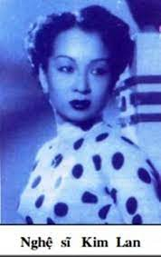

Sau đêm diễn đầu tiên ở rạp Chợ Bà, anh Năm Châu và chị Kim Lan bỏ về Sàigòn. Anh Năm Châu và chị Kim Lan rất bực mình vì phải hát cho ông Tướng coi mà từng màn từng lớp bị tiếng tu hít của hai anh lính hầu cận cắt vụn ra bằng những cái lịnh rất quái gở. Nghệ sĩ chúng tôi cũng bực mình nhưng bù lại cũng có điều vui là anh hề Tám Lắm và nghệ sĩ Tám Vân bàn với nhau là sẽ đưa hình tượng “nịnh thần” của hai anh lính cận vệ lên sân khấu để cho khán giả cười chê, (khi hát ở địa phương khác thì mới dám đưa chuyện hai anh lính nịnh đó mà diễu) còn lúc hát ở Chợ Bà Cái Vồn thì nhất thiết mọi việc đều phải tuân thủ răm rắp theo quy định của địa phương.

Nhập gia tùy tục, bài học mà nghệ sĩ cải lương đi hát lo diễn luôn luôn phải ghi nhớ. Hát ở Chợ Bà, địa phương qui định là toàn đoàn phải ăn chay như người địa phương thì đoàn hát phải ăn chay.
Hôm sau đoàn hát quảng cáo sẽ hát tuồng Gió Ngược Chiều của soạn giả Nguyễn Thành Châu (phóng tác theo kịch Ru Blas của Pháp).
Đa số diễn viên và nhơn viên của đoàn hát đều xuống đò máy để qua chợ Cần Thơ, 6 giờ chiều họ sẽ theo đò máy trở qua Chợ Bà để tối hát. Sở dĩ các nghệ sĩ qua tỉnh Cần Thơ và ở suốt ngày, chờ tối mới về là vì anh em không thể ăn chay với tương, rau; ăn chay như vậy thì mau đói bụng, tối hát không được, mà khi vãn hát cũng không mua được thức ăn khuya. Họ qua Cần Thơ ăn cơm quán, khi về mua thêm bánh mì thịt hoặc thịt heo quay, họ dấu thật kỹ trong các lon guigoz, bề ngoài bọc mấy cái bao nylon cho mùi thịt không bay ra ngoài chờ khi vãn hát, khán giả về hết, trong rạp chỉ còn người trong đoàn hát thì họ mới bày ra ăn.
Nghệ sĩ Tám Vân đóng vai Duy Bạt thay cho anh Năm Châu nên ở lại trong rạp, học lại vai tuồng để tối hát.
Nghệ sĩ Tám Vân tên thật là Lê Văn Tám, sanh năm 1924, em ruột của quái kiệt Hề Ba Vân (Lê Long Vân), quê ở quận Ba Tri, tỉnh Bến Tre. Thuở nhỏ anh Lê Văn Tám học trường Trung học Mỹ Tho, tới năm thứ ba, bỏ học đi theo anh Ba Vân gia nhập đoàn Đại Phước Cương ra Hà Nội hát, anh Lê Văn Tám được ông bầu Cương đặt cho nghệ danh là Tám Vân. Khi hát ở Hà Nội, anh Tám Vân mê cô đào hát Bích Châu của đoàn Kim Chung tại rạp hát Quảng Lạc nên bỏ đoàn Đại Phước Cương theo đoàn Kim Chung với cô Bích Châu đi hát ở nước Lào rồi sang Thái Lan cho tới năm 1952, anh Tám Vân và chị Bích Châu mới trở về Saigon, gia nhập đoàn Việt Kịch Năm Châu.
Tám Vân lúc nây là một kép đẹp trai, ca vọng cổ rất mùi, bài bản cổ nhạc nào anh ca cũng hay, đúng điệu. Anh thường thế vai anh Năm Châu, thủ vai kép chánh, đóng cặp với chị Kim Cúc (người chiến binh trong tuồng Người Mặt Cháy). Tám Vân thủ vai Duy Bạt trong tuồng Gió Ngược Chiều, đóng cặp với nữ nghệ sĩ Kim Lan (vai hoàng hậu Mã Nhi Nương Bửu), vai Hàm Lệ trong tuồng Hàm Lệ, Thái Tử nước Đan Mạch đóng cặp với Kim Lan (vai A Phượng Ly), vai Ngô Phù Sai trong tuồng Tây Thi, Gái nước Việt( Kim Lan trong vai Tây Thi). Anh Tám Vân chẳng những hát được những vai kép mùi mà anh còn chịu ảnh hưởng của anh Ba Vân nên Tám Vân có khả năng đóng các vai hề, vai lẳng trên sân khấu.
Nhắc lại khi anh Năm Châu và chị Kim Lan bỏ về Saigon sau đêm hát tuồng “Tây Thi, gái nước Việt ” thì Tám Vân và nữ nghệ sĩ Tương Lai (con của Hai Vân, anh ruột Tám Vân) phải hát thế các vai tuồng của anh Năm Châu và chị Kim Lan.
Lệ thường trong các gánh hát thì người thế vai cho kép chánh, đào chánh đều được hưởng những tiện nghi dành cho vai tuồng đó, cho đào kép chánh đó. Ví dụ: Chỗ ở của đào kép chánh trong rạp hát hay ở khách sạn được xắp xếp gần sân khấu nhứt, sạch sẽ khang trang nhứt, có đầy đủ tiện nghi như có ổ cắm điện riêng để gắn quạt máy hay réchaud nấu nước. Trong tuồng hát, những gì cần thiết để diễn xuất mà đào kép chánh trước quen dùng để hát tuồng đó thì đào kép thế vai tuồng cũng được hưởng như vậy. Ví dụ trong tuồng có uống rượu chát thiệt, ăn gà rôti thì kép thế vai sẽ được dùng rượu thiệt chớ không phải nước trà pha màu cho giống như rượu chát…
Chính vì được dùng những thứ thiệt như vừa kể nên nghệ sĩ Tám Vân mới bị một tai nạn nghề nghiệp mà trước đó trên sân khấu cải lương chưa hề có xảy ra.